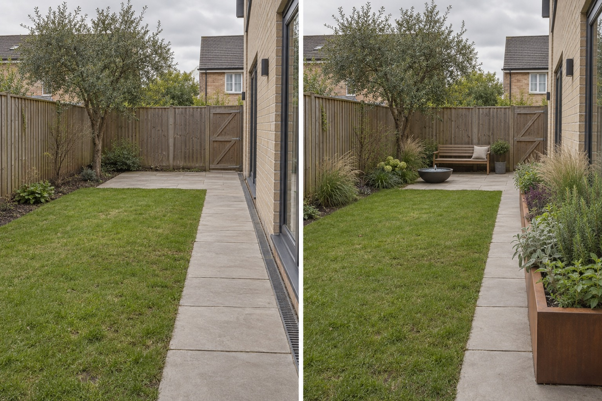

Choose one calm route
The existing straight path remains visually open, so a visitor can understand the sequence before engaging with any planting or feature.
A useful sensory garden starts with a person and a purpose. Decide whether the experience should feel quiet or lively, keep one route easy to understand, then place a limited mix of reachable texture, scent, movement and sound beside that route and one pause point.
Editorially reviewed September 9, 2026.
This AI-generated comparison is visual inspiration, not a therapeutic claim, accessibility assessment, plant identification, toxicity or allergy check, edible-plant advice, maintenance instruction, cost estimate or construction plan.

The existing straight path remains visually open, so a visitor can understand the sequence before engaging with any planting or feature.
A raised planter sits beside—not across—the path, grouping contrasting foliage forms where they can be approached without filling the circulation line.
A small movable water bowl and grasses sit near the existing paved stopping place, keeping the livelier cues away from the whole garden.
The Royal Horticultural Society’s sensory-garden guidance treats sight, sound, scent, touch and taste as different ways to experience a space and advises considering what a particular setting needs. Thrive’s planning guidance recommends deciding the garden’s role before filling it with stimuli and notes that individual responses differ. Those principles support a purpose-led layout, not a health outcome or universal preference.
The paved path, channel drain, rectangular lawn, mature tree, rear gate, fence, house wall, paved pause area, levels, weather and camera position remain unchanged. The concept does not widen a path, certify access, remove the tree, hide drainage or claim the raised planter and water feature are suitable products.
Record who will use the space, when they visit, what helps them engage and what they prefer to avoid. Do not assume everyone finds the same stimulus calming.
Mark the route, turning or stopping areas, seated reach, maintenance access and drainage. Obtain a qualified access assessment when compliance matters.
Trial a movable pot, texture sample or quiet sound source before combining features. Observe glare, volume, scent strength, seasonal change and nearby noise.
Check plant identity, toxicity, skin irritation, thorns, allergens, edibility, water hygiene, mature size and local suitability with authoritative sources.
Avoid forcing all five senses into every corner, placing touch plants beyond comfortable reach, using strong scents without asking users, implying that any plant is safe to touch or taste, adding water without a care plan, narrowing the route or treating a visual contrast as proof of accessibility.
Stop before prescribing a therapeutic outcome, specifying an accessible route, inviting contact with an unidentified plant, presenting something as edible, installing water or changing levels. Seek appropriate local horticultural, access, health or construction advice for the real users and site.
It can include a deliberate mix of sight, scent, touch, sound, movement or taste, but it does not need every sense. Start with the intended users and purpose, then choose a few verifiable elements.
Yes. A short sequence of reachable textures, one preferred scent, visible movement and a comfortable pause can create a distinct experience without filling the space.
No. The same sound, fragrance, color or texture can feel welcome to one person and overwhelming to another. Ask the intended users and allow unwanted stimuli to be removed or avoided.
No. AI can visualize placement and contrast, but plant identity, toxicity, allergens, irritation, edibility, local suitability and maintenance must be verified independently.
Upload a level photo and compare a restrained concept while keeping paths, drains, gates, levels and mature features visible.
AI-generated visualizations are concepts. Verify user preferences, plant identity and contact risks, access, drainage, water safety and professional requirements before physical work.